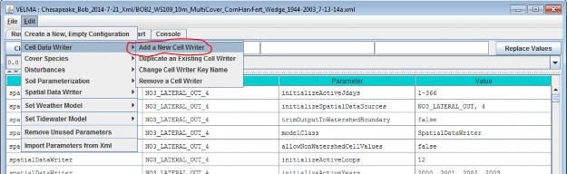
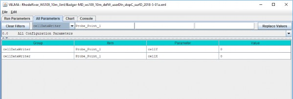

Cell Data Writer Configuration
Overview (Tutorial D.8 - Cell Data Writer Configuration)
This document explains how to add optional Cell Data Writers to a VELMA simulation. Cell Data Writers allow you to gather daily simulation results for a specific cell. For example, this is useful if need to compare VELMA soil moisture predictions to observed data recorded by a soil moisture sensor at a particular location.
Cell Data Writers Allow You to Gather and Report Simulation Results for a Specific Grid Location
The VELMA simulator automatically provides daily simulation results for various values (e.g. Leaf Biomass), however these daily results are values that are computed by summing individual cell values and then dividing the sum by the number of cells in the simulation's delineated watershed.
To gather and report daily simulation results for a single, specific cell, you need to add a Cell Data Writer parameterization for that cell to the simulation configuration.
Adding a Cell Data Writer to a Simulation Configuration
Cell Data Writers are optional. Simulation configurations contain zero instances of them by default. When added, they do not change the simulation computations - they are only involved in reporting results.
To add a Cell Data Writer to your simulation configuration:
Click the "Edit" --> "Cell Data Writer" --> "Add a New Cell Writer" menu item.

Clicking "Add a New Cell Writer" opens the Cell Writer Name dialog, which looks like this:

Enter a name for your new Cell Data Writer and click "OK".
The name must be unique (i.e. no other Cell Data Writer already specified for this simulation configuration can share the name you specify) and we recommend avoiding whitespace and
punctuation characters (e.g. "(" and ")"). An acceptable example name (assuming it's not already in use by another Cell Data Writer might be "Probe_Point_1" or maybe "Outlet_Cell".
Configuring a Cell Data Writer's Parameters
After you click OK in the Cell Data Writer's naming dialog, the VELMA GUI adds the Cell Data Writer to the simulation configuration, and sets the All Parameters tab's filters to display only the parameters of the newly-added Cell Data Writer.
Assuming we named our new Cell Data Writer "Probe_Point_1" and clicked OK, the VELMA GUI would look like this afterwards:

Notice, in passing, that the configuration outline does not automatically get set by the GUI. In the example screen capture above, it displays "0.0 All Configuration Parameters" - which is not what is being displayed in the parameterization table. This behavior is harmless.
A Cell Data Writer has only 2 parameters, but they must both be set correctly: none are optional.
Set the cellX parameter's value to the X-coordinate (i.e. column value) of the cell you want data reported for. The valid range is from 0 (the leftmost column) to (number of columns - 1).
Set the cellY parameter's value to the Y-coordinate (i.e. row value) of the cell you want data reported for. The valid range is from 0 (the topmost row) to (number of rows - 1).
Cell Data Writers Report Cell-Specific Results for Every Simulation Step
Previous versions of JVelma required each Cell Data Writer parameterization to explicitly state which Julian Days of the year the Cell Data Writer instance should report data for. The parameter that specified this ("initializeActiveJdays") has been removed. Each Cell Data Writer instance parameterized for a simulation now implicitly "knows" to report data for each step of the simulation.
Cell Data Writer Output is A Comma-Separated Values File
The VELMA simulator creates 1 .csv file for each valid Cell Data Writer parameterization in the simulation configuration .xml file.
Cell Data Writer output files are written to the Results Data Location folder. Their filenames always begin with the prefix "Cell_" and contain the linear index, x-coordinate and y-coordinate of the cell they contain data for (e.g. Cell_i2873_x35_y33.csv).
Each row of a Cell Data Writer output file contains results data for a specific loop, year and Julian day during the simulation run. The file's columns contain the specific results. The header row of the file specifies the contents of each column. Note that some columns contain data that never varies (e.g. the DEM_Elevation(m) column reports the cell's elevation - which is always the same value.)
Cell Data Writers and Spatial Data Writers are Different, but Complementary
A Cell Data Writer reports all the results data available for a specific cell on user-specified days.
A Spatial Data Writer reports a specific result for all the cells in the simulation watershed on user- specified days. Both are optional for simulation runs.